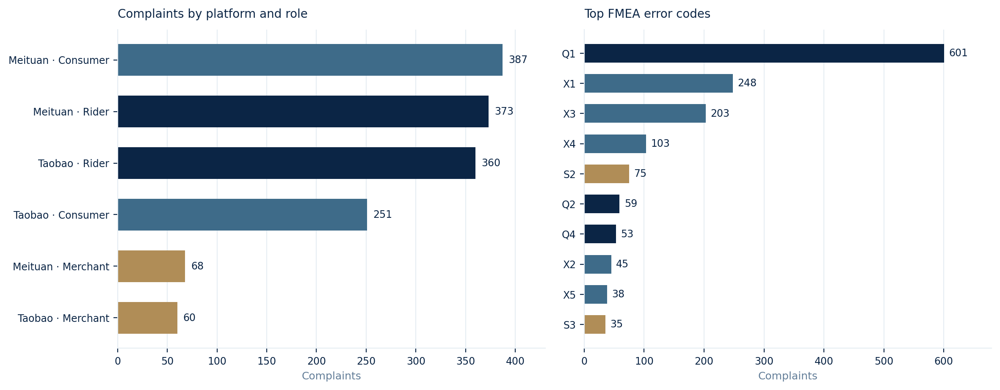
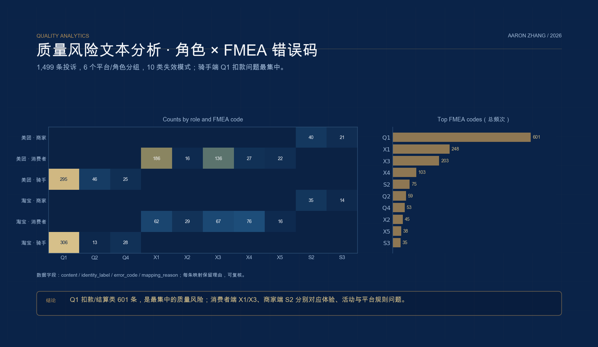

质量风险文本分析（FMEA）
把淘宝闪购、美团外卖的 1,499 条消费者 / 商家 / 骑手投诉，整理成带身份标签和 FMEA 错误码的质量风险数据集。
| 项目 |
质量管理课程项目 · 小组项目（全面参与） |
| 时间 |
2026 春 |
| 方向 |
文本分类 / 质量风险 / FMEA |
| 关键词 |
Text Classification FMEA Data Annotation Quality Risk |
背景 / Context
平台型服务的质量问题分散在消费者、商家和骑手三端。同一条投诉，从不同角色看可能是不同的问题：消费者关心退款和体验，商家关心平台规则和结算，骑手关心派单和扣款。
项目把非结构化的投诉文本，变成可分角色查看、可对应失效模式的结构化数据，为质量风险识别和后续改进提供基础。
数据 / Data
- 来源：淘宝闪购、美团外卖的公开投诉/反馈文本。
- 规模：1,499 条。
- 六个分组：淘宝 × 消费者 / 商家 / 骑手；美团 × 消费者 / 商家 / 骑手。
- 字段：
content（投诉原文）、identity_label（角色）、error_code（FMEA 错误码）、mapping_reason（映射理由）。

我的工作 / What I did
- 清洗投诉文本，去掉重复、无效和过短内容。
- 按消费者 / 商家 / 骑手三种身份分类。
- 将投诉映射到 FMEA 错误码，并记录映射理由，保证结果可复核。
- 按平台和角色整理成 6 个结构化 CSV，统计各错误码的出现频次。
- 输出可用于质量风险排序和后续改进的清单。
结果 / Results
- 形成 1,499 条、6 个分组的质量风险数据集。
- 骑手端的
Q1（扣款/结算类）出现最多，共 601 条；消费者端的 X1、X3 分别为 248、203 条；商家端的 S2 为 75 条。
- 数据可以直接按平台、角色、错误码筛选，用于定位高频质量问题。
关键数据 / Key Numbers
| 分组 |
记录数 |
主要错误码 |
| 淘宝 · 消费者 |
251 |
X1 / X3 |
| 淘宝 · 商家 |
60 |
S2 / S3 |
| 淘宝 · 骑手 |
360 |
Q1 / Q2 / Q4 |
| 美团 · 消费者 |
387 |
X1 / X3 |
| 美团 · 商家 |
68 |
S2 / S3 |
| 美团 · 骑手 |
373 |
Q1 / Q2 / Q4 |
| 合计 |
1,499 |
10 类 FMEA 错误码 |

图：6 个平台/角色分组 × 10 类 FMEA 错误码的频次热力图；右侧为总频次最高的错误码。
结论 / Takeaways
- Q1 扣款/结算类是最大风险池：601 条，主要集中在骑手端；这比“整体满意度低”更能指导改进。
- 不同角色的高频问题不同：消费者端 X1/X3（体验、活动），商家端 S2（平台规则/退款），骑手端 Q1（扣款/结算）。
- FMEA 让文本变成可排序的风险清单：每条投诉都有身份标签、错误码和映射理由，后续可以按角色和风险等级处理。
边界 / Limitations
- 错误码映射包含人工判断，存在一定主观性。
- 投诉文本只代表愿意发声的用户，不能代表全部用户体验。
- 项目重点是结构化与分类，不是因果推断；不能直接说某个错误码导致了多少损失。
这个项目说明了什么 / What it shows
- 文本结构化：把非结构化投诉变成可分析的数据。
- 质量工具：用 FMEA 的失效模式思路组织问题，而不是只做情感分析。
- 可复核性：每条映射都保留理由，方便别人检查和修正。
说明：案例页只展示聚合统计，不包含原始投诉文本和个人信息。